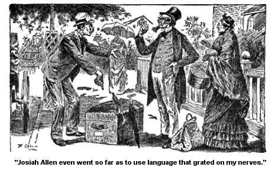
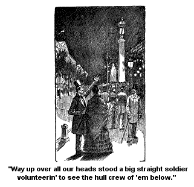
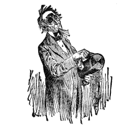

WE ARRIVE AT SARATOGA.
We arrived at Saratoga jest as sunset with a middlin' gorgeous dress on wuz a walkin' down the west and a biddin' us and the earth good-bye. There wuz every color you could think on almost, in her gown and some stars a shinin' through the floatin' drapery and a half moon restin' up on her cloudy foretop like a beautiful orniment.
(I s'pose mebby it is proper to describe sunset in this way on goin' to such a dressy place, though it haint my style to do so, I don't love to describe sunset as a female and don't, much of the time, but I love to see things correspond.)
Wall, we descended from the cars and went to the boardin' place provided for us beforehand by the look out of friends. It wuz a good place, there haint no doubt of that, good folks; good fare and clean.
Ardelia parted away from us at the depo. She wuz a goin' to board to a smaller boardin' house kep' by a second cousin of her father's brother's wife's aunt. It wuz her father's request that she should get her board there on account of its bein' in the family. He loved "to see relations hang together;" so he said, and "get their boards of each other." But I thought then, and I think now, that it wuz because they asked less for the board. Deacon Tutt is close. But howsumever Ardelia went there, and my companion and me arrove at the abode where we wuz to abide, with no eppisode only the triflin' one of the driver bein' dretful mistook as to the price he asked to take us there.
I thought, and Josiah thought, that 50 cents wuz the outlay of expendatur he required to carry us where we would be; it wuz but a short distance. But no! He said that 5 dollars wuz what he said, that is, if we heard anything about a 5. But he thought we wuz deef, and dident hear him. He thought he spoke plain, and said 4 dollars for the trip.
And on that price he sot down immovible. They arged, and Josiah Allen even went so far as to use language that grated on my nerve, it wuz so voyalent and vergin' on the profane. But there the man sot, right onto that price, and he had to me the appeerance of one who wuz goin' to sot there on it all night. And so rather than to spend the night out doors, in conversation with him, he a settin' on that price, and Josiah a shakin' his fist at it, and a jawin' at it, I told Josiah that he had better pay it. And finally he did, with groanin's that could hardly be uttered.

Wall, after supper (a good supper and enough on't), Josiah proposed that we should take a short walk, we two alone, for Ardelia wuz afar from us, most to the other end of the village, either asleep or a writin' poetry, I didn't know which, but I knew it wuz one or the other of 'em. And I wuz tired enough myself to lay my head down and repose in the arms of sleep, and told my companion so, but he said:
"Oh shaw! Let old Morpheus wait for us till we get back, there'll be time enough to rest then."
Josiah felt so neat, that he wuz fairly beginnin' to talk high learnt, and classical. But I didn't say nothin' to break it up, and tied on my bonnet with calmness (and a double bow knot) and we sallied out.
Soon, or mebby a little after, for we didn't walk fast on account of my deep tucker, we stood in front of what seemed to be one hull side of a long street, all full of orniments and open work, and pillows, and flowers, and carvin's, and scallops, and down between every scollop hung a big basket full of posys, of every beautiful color under the heavens. And over all, and way back as fur as we could see, wuz innumerable lights of every color, gorgeousness a shinin' down on gorgeousness, glory above, a shinin' down on glory below. And sweet strains of music wuz a floatin, out from somewhere, a shinin' somewhere, renderin' the seen fur more beautiful to all 4 of our wraptured ears.
And Josiah sez, as we stood there nearly rooted to the place by our motions, and a picket fence, sez he dreamily,
"I almost feel as if we had made a mistake, and that this is the land of Beuler." And he murmured to himself some words of the old him:
"Oh Beuler land! Sweet Beuler land!"
And I whispered back to him and sez - "Hush they don't have brass bands in Beulah land."
And he sez, "How do you know what they have in Beuler?"
"Wall," sez I, "'taint likely they do."
But I don't know as I felt like blamin' him, for it did seem to me to be the most beautiful place that I ever sot my eyes on. And it did seem fairly as if them long glitterin' chains and links of colored lights, a stretchin' fur back into the distance sort a begoned for us to enter into a land of perfect beauty and Pure Delight.
And then them glitterin' chains of light would jine onto other golden, and crimson, and orange, and pink, and blue, and amber links of glory and hang there all drippin' with radiance, and way back as fur as we could see. And away down under the shinin' lanes the white statues stood, beautiful snow-white females, a lookin' as if they enjoyed it all. And the lake mirrowed back all of the beauty.
Right out onto the lake stood a fairy-like structure all glowin' with big drops of light and every glitterin' drop reflected down in the water and the fountain a sprayin' up on each side. Why it sprayed up floods of diamonds, and rubys, and sapphires, and topazzes, and turkeys, and pearls, and opals, and sparklin' 'em right back into the water agin.
And right while we stood there, neerly rooted to the spot and gazin' through extacy and 2 pickets, the band gin a loud burst of melody and then stopped, and after a minute of silence, we hearn a voice angel-sweet a risin' up, up, like a lark, a tender-hearted, golden-throated lark.
High, high above all the throngs of human folks who wuz cheerin' her down below - up above the sea of glitterin' light - up above the bendin' trees that clasped their hands together in silent applaudin' above her, up, up, into the clear heavens, rose that glorious voice a singin' some song about love, love that wuz deathless, eternal.
Why it seemed as if the very clouds wuz full of shadowy faces a bendin' down to hear it, and the new moon, shaped just like a boat, had glided down, down the sky to listen.
If the man of the moon was there he wuz a layin' in the bottom of the boat, he wuzn't in sight. But if he heard that music I'll bet he would say he wuzn't in the practice of hearin' any better. And Josiah stood stun still till she had got done, and then he sort a sithed out:
"Oh, it seems as if it must be Beuler land! Do you s'pose, Samantha, Beuler land is any more beautiful?"
And I sez, "I haint a thinkin' about Beulah." I sez it pretty middlin' tart, partly to hide my own feelin's, which wuz perfectly rousted up, and partly from principle, and sez I, "Don't for mercy's sake call it Beuler."
Josiah always will call it so. I've got a 4th cousin, Beulah Smith (my own age and unmarried up to date), and he always did and would call her Beuler. Truly in some things a pardner's influence and encouragement fails to accomplish the ends aimed at.
Wall, it wuz after some words that I drew Josiah away from that seen of enchantment - or he me, I don't exactly know which way it wuz - and we wended onwards in our walk.
The hull broad streets wuz full of folks, full as they could be, all on 'em perfect strangers to us and who knew what motives or weapons they wuz a carryin' with 'em; but we knew we wuz safe, Josiah and me did, for way up over all our heads, stood a big straight soldier, a volunteer volunteerin, to see to the hull crew on 'em below, a seein' that they behaved themselves. His age wuz seventy-seven as near as I could make out but he didn't look more'n half that. He had kep' his age remarkable.

Wall, it wuz, if I remember right, jest about now that we see a glitterin' high up over our heads some writen in flame. I never see such brilliant writin, before nor don't know as I ever shall ag'in.
And Josiah stopped stun still, and stood a lookin' perfectly dumfoundered at it. And finally he sez, "I'd give a dollar bill if I could write like that."
I see he wuz deeply rousted up for 2 cents is as high as he usually goes in betted. I see he felt deep and I didn't blame him. Why," sez he, "jest imagine, Samantha, a hull letter wrote like that! how I'd love to send one back to Uncle Nate Gowdey.
"How Uncle Nate's eyes would open, and he wouldn't want no spectacles nor nothin' to read it with, would he? I wonder if I could do it," sez he, a beginnin' to be all rousted up.
But I sez, "Be calm," for so deep is my mind that I grasped the difficuties of the undertaken' at once. "How could yon send it, Josiah Allen? Where would you get a envelop? How could you get it into the mail bag?" Sez I, "When anybody would send a letter wrote like that, they would want to write it on sheets of lightnin', and fold it up in the envelopin' clouds of the skies, and it should be received by a kneelin' and reverent soul. Who is Uncle Nate that he should get it? He has not a reverent Soul and he has also rheumatiz in his legs."
And then I thought, so quick and active is my mind when it gets to startin' off on a tower, I thought of what I had hearn a few days before, of how the secret had been learnt by somebody who lived right there in the village, of floatin' letters up at sea from one ship to another, sigualin' out in letters of flame -
"Help! I'm a sinkin'!" or "Danger ahead! Look out!"
And I thought what it must be to stand on a dusky night on a lone deck and see up on the broad, dark; lonesome sky above, a sudden message, a flash of vivid lightnin', takin' to itself the form of language. And I wondered to myself if in the future we should use the great pages of the night-sky to write messages from one city to another, or from sea to land, of danger and warnin'; and then I thought to myself, if souls clog-bound to earth are able to accomplish so much, who knows but the freed soul goin' outward and onward from height to height of wisdom may yet be able to signal down from the Safe Land messages of help and warnin' to the souls it loved below.
The souls a sailin' and a driftin' through the dark night of despair - a dashin' along through fog and mist and darkness aginst rocks. What it would be to one kneelin' in the lonesome night watches by a grave, if the dark sky could grow luminous and he could read, - "Do not despair! I am alive! I love you!"
Or, in the hour of the blackest temptation and dread, when the earth is hollow and the sky a black vault, and the only way of happiness on God's earth seems down the dangerous, beautiful way, God-forbidden, what would it be to have the empty vault lit up with "Danger ahead! We will help you! be patient a little longer!"
Oh how fur my thoughts wuz a travellin', and at what a good jog, but not one trace did my companion see on my forward of these thoughts that wuz a passin' through my foretop: and at that very minute, we came up nigh enough to see that right back of the glitterin' language overhead, went a long line of big, glowin' stars of glory way up over our heads, and leadin' down a gentle declivity and Josiah sez, "Let's foller on, and see what it will lead us to, Samantha."
"Wall," sez I, "light is pretty generally, safe to foller, Josiah Allen." And so we meandered along, keepin' our 2 heads as nigh as we could under that long glitterin' chain of golden drops that wuz high overhead. And on, and on, we follered it dilligently; till for the land's sake! if it didn't lead us to another one of them openwork buildin's, fixed off beautiful, and we could see inside 2 big wells like, with acres of floor seemin'ly on each side of 'em, and crowds of folks a walkin' about and settin' at little tables and most all of 'em a drinkin'.
The water they drinked we could see wuz a bubblin' up and a runnin' over all the time, in big round crystal globes. And up, up on a slender pole way up over one of the wells hung another one of them crystal bowls, a bubblin' over with the water and sparklin'.
And ag'in Josiah asked me if I thought Beuler land could compare with it?
And I told him ag'in kinder sharp, That I wuzn't a thinkin' about Beuler, I didn't know any sech a place or name. I wish he would call things right.
Wall, he wuz so dead tired by this time, that we sot sail homewards; that is, my feet wuz tired, and my bones, but my mind seemed more rousted up than common.
